The Reed and the Code
& the Living Sanctuary
A treatise by Mandos16: a hollow reed, a necklace of bone, a mistranslated sea and the Greek alphabet, read as the human spine.
Each chapter keeps the treatise intact in gold. Beside it, in cyan, is a check against the ancient texts, anatomy and linguistics, including the arithmetic. Where they differ, you can see exactly how.
The Greek Alphabet Maps the Human Spine
A recorded talk in English. It loads only when you press play.
Ο κώδικας του καλάμου στη σπονδυλική στήλη
A recorded talk in Greek. It loads only when you press play.
Kalamos & Karpos
Kalamos, the reed, and Karpos, the fruit, were young lovers. Karpos drowned in the river Meander during a swimming contest. Kalamos, struck with grief, was changed into a hollow river reed that rustles when the wind passes through it.
The body decode. Kalamos is the hollow stalk of the spine and its central canal. A reed sways in the wind and hums when air passes through it. The spine acts as a hollow conduit for the fluid oscillations of breath and heartbeat.
The rustle of the reed was heard as a lament. The myth binds a physical reed to voice, breath, fluid and resonance.
Ελληνικά
Ο Κάλαμος αντιπροσωπεύει τον κοίλο άξονα της σπονδυλικής στήλης. Οπως ο κάλαμος παράγει ηχο με τον άνεμο, έτσι και η σπονδυλική στήλη λειτουργεί ως κοίλος αγωγός για την αναπνοή και τη ροή του σώματος.
The source. The story is told by Nonnus in his Dionysiaca (book 11, 5th century CE). Kalamos is a son of the river god Maiandros, and in the telling Karpos becomes the fruit and Kalamos the reed.
The word. Kalamos descends from a Proto-Indo-European root for “reed, straw”, which also gave Latin culmus and Old English healm. Arabic qalam, “pen”, is a different case: it was borrowed from Greek, so it is a relative by loan, not a branch of the same root.
The anatomy. The spinal canal is hollow and contains the spinal cord, surrounded by cerebrospinal fluid (CSF). That fluid pulses with each heartbeat and each breath. Air itself does not travel in the canal.
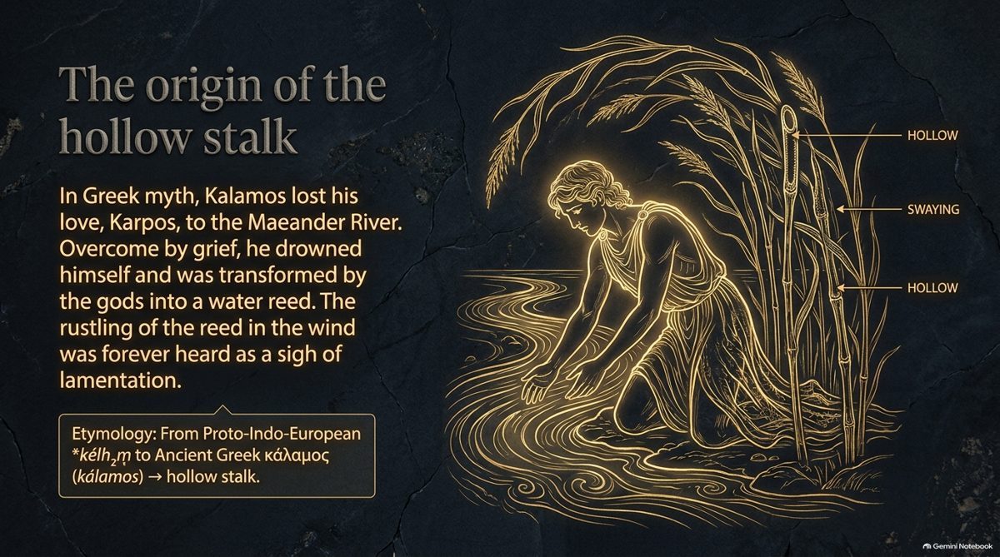
The Reed Makes Its Own Wind
A garden reed sways only when the wind moves it. In the treatise the human reed generates its own wind, and the fluid in it moves in a wave.
The node. At the top of the stalk, the medulla oblongata, the central canal opens into the fourth ventricle. In the ventrolateral medulla sits the pre-Bötzinger complex, the pacemaker of breathing. The “wind” is born here.
The wave. CSF does not sit still. With each heartbeat it is pressed downward, and it rebounds as the pressure falls, and breathing modulates it. The result is a standing wave in a hollow tube.
The neural tube, a fossil. In weeks 3 to 4 of gestation the neural plate folds shut into a hollow tube. The central canal is a miniature preservation of it.
Agrees. The pre-Bötzinger complex is a real rhythm-generating cluster for breathing. CSF does pulse with the heartbeat, flowing downward through the neck as the brain swells in systole. The neural tube does close in weeks 3 to 4, and the central canal is its remnant.
Differs. (1) Resting breathing at 12 to 20 breaths a minute is 0.2 to 0.33 Hz, not the 0.1 to 0.2 Hz written in the deck. (2) As far as I know, real-time MRI studies find that inspiration moves CSF toward the head, the opposite of the files, which say downward. Please check this one. (3) The central canal is largely closed in many adults, so the pulsing wave travels in the surrounding subarachnoid space; one of your files has this right and another does not. (4) The 78 mm/s peak speed is quoted in your files; I could not check it, and speeds vary by person and level.
From Kadmos to Kalamos
The two words share the same frame and differ in one place. ΚΑΔΜΟΣ has a closed triangle, Δ, as its third letter. ΚΑΛΑΜΟΣ opens that triangle into two letters, Λ and Α.
Phonetic liquefaction. Delta is a closed container: static, architectural force. Opened into the peak of Lambda and the primary force of Alpha, it becomes the fluid, swaying reed. Cadmus, the solid frame of the alphabet, liquefies into Kalamos.
The delta. 362 − 335 = 27. Δ is 4 and Λ + Α is 31, so the swap adds 27, the number of letters in the archaic Greek alphabet, flowing as a wave through the 31 spinal segments.
Arithmetic checks out. ΚΑΔΜΟΣ = 335, ΚΑΛΑΜΟΣ = 362, difference 27, and Λ + Α − Δ = 31 − 4 = 27. The 31 spinal segments are real, one for each of 31 pairs of spinal nerves.
Worth testing. The classical alphabet has 24 letters; 27 counts the three archaic number-letters. One matching difference cannot tell design from chance, so a fair test is to see how many other word pairs in the Greek lexicon differ by 27.
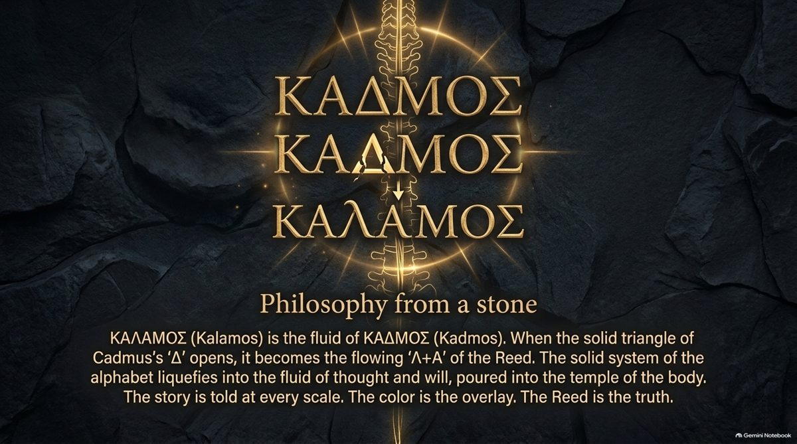
Revelation 11:1, a reed like a rod
In Revelation 11:1 John is given a measuring reed: kalamos homoios rhabdō, “a reed like a rod”. The treatise counts the phrase as 1729 and says that, by the rule of colel, it equals sōma tou Iēsou, “the body of Jesus”. The measuring reed is then the human body acting as a baseline.
The first half holds. κάλαμος 362 + ὅμοιος 460 + ῥάβδῳ 907 = 1729. The total is right. The parts quoted in the files, 390 and 977, are not the values of the words, though they happen to sum to the same 1367.
The second half holds too, without the article. σῶμα 1041 + Ἰησοῦ 688 = 1729, in plain Milesian isopsephy with no special rule. Add the article, τὸ σῶμα τοῦ Ἰησοῦ as the New Testament usually writes it, and the total changes (σῶμα τοῦ Ἰησοῦ is 2499). So the match is exact for the bare phrase σῶμα Ἰησοῦ. The treatise should state that form, because a reader who tries the usual wording will not get 1729.
Cadmus, Harmonia & the Necklace
Cadmus, founder of Thebes, killed the dragon of Ares and sowed its teeth, and armed men, the Spartoi, rose from the ground. He married Harmonia, daughter of Ares and Aphrodite. At the wedding Hephaestus gave her a radiant necklace that carried a curse down the generations, until Cadmus and Harmonia were changed into serpents.
Cadmus is rigid structure: bone, and the solid vertebral column. He brings the discrete letters, the building blocks poured into the living reed.
Harmonia (“fitting together”) is structural balance: the natural curves and equilibrium that hold the body together.
The necklace is the central canal running through the aligned vertebrae. The curse is its slow closing: with age the canal fills with cell debris and seals.
The serpents are the last form of the reed: as the cord ends it tapers to a cone and a dry fibrous thread, anchored in the fused stone of the coccyx.
The older story. In an older tradition Cadmus was keeper of the First Temple of Knowledge in ancient Armenia, the land of the writing god Tir, and carried a sacred script westward.
Ελληνικά
Ο Κάδμος αντιπροσωπεύει τη συμπαγή δομή, τα οστά και τη σπονδυλική στήλη. Η Αρμονία τη φυσική ισορροπία και τη ροή που κρατά το σώμα σε ευθυγήμμιση. Το Περιδέραιο συμβολίζει το νωτιαίο κανάλι και τον νευρικό άξονα.
The myth. Harmonia is the daughter of Ares and Aphrodite, and the necklace is made by Hephaestus; in some tellings he curses it out of anger at Aphrodite. Its curse falls on the royal house of Thebes. Ovid tells how Cadmus and Harmonia became serpents in Illyria. Five Spartoi survive the fight among the sown men.
The letters. Herodotus says Cadmus brought sixteen letters, the Kadmeia grammata. In Greek sources Cadmus comes from Phoenicia, from Tyre or Sidon. The Armenian temple and the link to Tir are not in the classical sources; they belong to the Codex.
The anatomy. The conus medullaris ends at about L1 to L2, and the filum terminale is a fibrous thread that anchors to the coccyx, which is usually four fused vertebrae, three to five in all. The central canal does narrow, and is often closed, in adults.
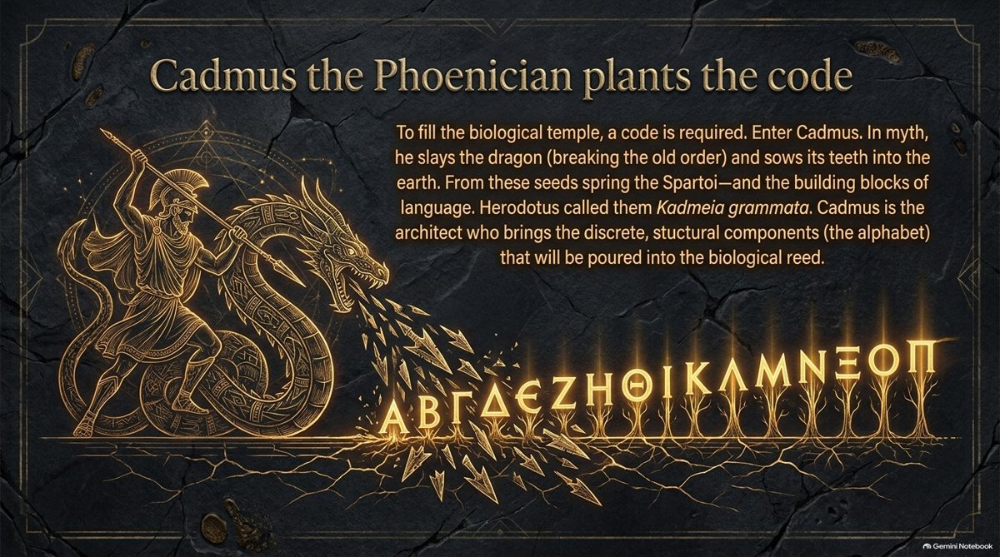
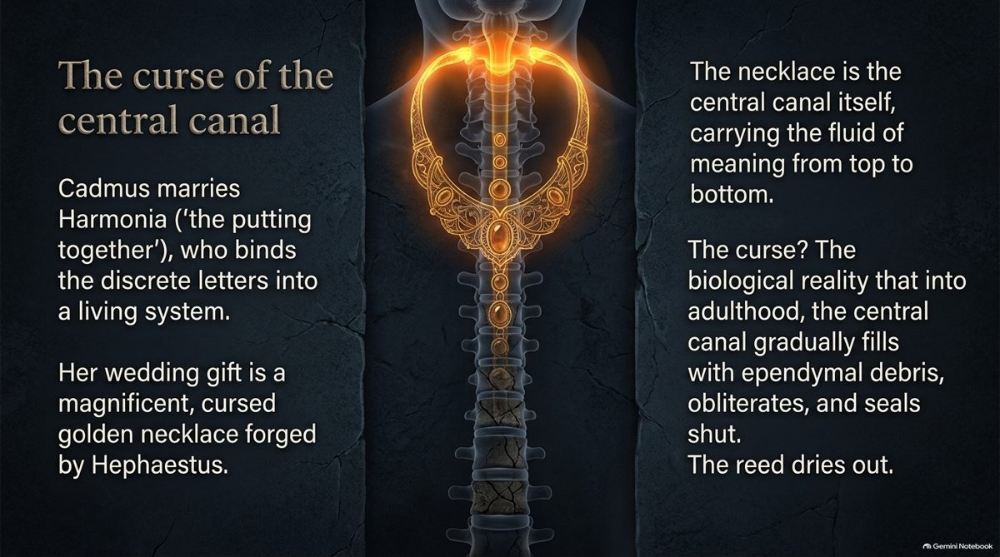
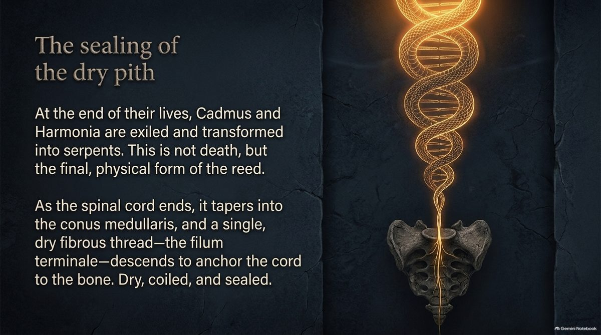
Yam Suph & the Red Sea
The Hebrew phrase Yam Suph (ים סוף) is the sea the Israelites cross in Exodus. Greek translators in Alexandria rendered it Erythra Thalassa, the “Red Sea”, and later translations followed.
The reading. This is a 2,300-year translation overlay. Suph is an Egyptian loanword for papyrus reeds and marsh plants, so the text describes crossing a marshy Sea of Reeds. It parallels the way Phoinikeia grammata was renamed “Phoenician letters”.
Moses as the one who draws out. Moshé comes from the root m-sh-h, “to draw out”. He is drawn from the reeds of the Nile as a baby, and he draws his people through the Sea of Reeds. Inside, he is the intent that draws attention and fluid up the hollow reed.
The body link. The Sea of Reeds is the internal reed, the spine, and the fluid wave in deep stillness.
Ελληνικά
Κατά τον 3ο αιώνα π.Χ., οι μεταφραστές της Μετάφρασης των Εβδομήκοντα απέδωσαν την εβραϊκή φράση Yam Suph ως «Ερυθρά Θάλασσα». Η λέξη Suph είναι αιγυπτιακός δανεισμός που σημαίνει «πάπυρος» και «κάλαμοι ελών».
Agrees. The Septuagint, made in Alexandria in the 3rd century BCE, does say Erythra Thalassa, and the Latin and English Bibles kept it. Hebrew suph does mean reeds or rushes: in Exodus 2 the baby is put among the suph at the river’s edge. Exodus 2:10 itself explains the name Moses as “drawn out”. An Egyptian source for suph, from twf, “papyrus”, has been proposed, and the Egyptologist James Hoffmeier argues for a reed-marsh reading in Israel in Egypt.
Differs. Yam Suph also names real salt water: 1 Kings 9:26 puts Ezion-geber on its shore, on the Gulf of Aqaba. The translators may have been naming a real sea, not just misreading a word, and which water the crossing was is still debated. Many scholars also note that the name Moses resembles the Egyptian word mose, “born of”, as in Thutmose.
| Era | Language | Term | Meaning |
|---|---|---|---|
| Original text | Hebrew | ים סוף | “Sea of Reeds” |
| 3rd century BCE | Greek (Septuagint) | Ἐρυθρὰ Θάλασσα | “Red Sea” |
| 4th to 5th century CE | Latin (Vulgate) | Mare Rubrum | “Red Sea” |
| 1611 | English (King James) | Red Sea | fixed in English |
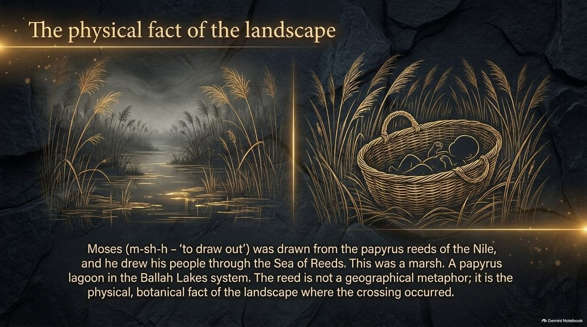
The Medullary Node & the Land of Milk and Honey
The treatise follows the Exodus up the reed to its top, to the point on the nape of the neck called GV-16, Fengfu, “Wind Mansion”.
The threshold. The medulla oblongata, where the spinal reed widens into the brainstem, lies behind the acupuncture point GV-16 at the cisterna magna. When breath slows in meditation, heartbeat and breath couple into one large wave there, and the fourth ventricle opens.
The milk. The white, nourishing cerebrospinal fluid.
The honey. In deep stillness, with the senses withdrawn, the pineal gland releases its golden secretions into the ventricles: melatonin, pinoline and DMT derivatives. This floods the cisterna magna and descends the 31 spinal segments, an inner ocean.
The arc. Namu, the unmanifest womb (M); Inana, the kinetic ego; Gestinana, satiated resolution, decoded as GE-SH-D: Ground (Γ = 3), Silence (SH) and Limit (Δ = 4).
Agrees. GV-16 sits in the hollow below the skull at the nape, close to the foramen magnum and the cisterna magna. The pineal gland does secrete melatonin, which reaches the CSF of the third ventricle, and secretion rises in darkness. There are 31 pairs of spinal nerves. “Land of milk and honey” is the Bible’s phrase for the promised land. Namu, Inana and Geshtinanna are Sumerian goddesses.
Differs. (1) CSF is made mainly by the choroid plexus in the ventricles, not by the pituitary. (2) Pinoline is found in the pineal gland, and DMT has been measured in rat pineal tissue, but I know of no evidence that meditation makes the pineal release DMT into the CSF of a person. This is the least supported claim in the chapter. (3) Closing the eyes does not switch the pineal gland to its full night-time secretion. (4) The file that says the subarachnoid space “preserves” the neural tube is mixed up: the remnant of the tube is the central canal.
The Alphabet Down the Spine
In the Ellin Logos system of Theologos Simaioforos, letters are acts, and they fall into two camps. Seven vowels carry force and light. Seventeen consonants give structure. Choose a station on the spine.
The count. 7 vowels + 17 consonants = 24 letters. The ordering inside each group below is one natural choice: the sources give only the 7 + 17 split.
Diphthongs mark the inflection points where force (vowel) merges with structure (consonant), as at the enlargements. The final sigma ς appears only at the end of a word, as the coccyx is the end of the reed.
Ελληνικά
Τα φωνήεντα ρέουν ελέυθερα με την αναπνοή, ξεκινώντας από το πάνω μέρος του λαιμού. Τα σύμφωνα δημιουργούν δομικά σημεία επαφής (γλώσσα, δόντια, χείλη). Το τελικό σίγμα (ς) αντιπροσωπεύει το σημείο ηρεμίας στη βάση της σπονδυλικής στήλης.
A real number match. The Greek alphabet has 24 letters. The spine has 7 cervical, 12 thoracic and 5 lumbar vertebrae: 7 + 12 + 5 = 24. Seven Greek vowels and seven cervical vertebrae, and 17 consonants against 12 + 5, are exact counts, not rounded ones.
Where it differs. Vowels are shaped in the throat and mouth, not along the spine, so the map is a memory aid. A final sigma is only the form the letter takes at the end of a word, and it has the same value as σ, 200. The cord itself stops at L1 to L2, well above the lower vertebrae.
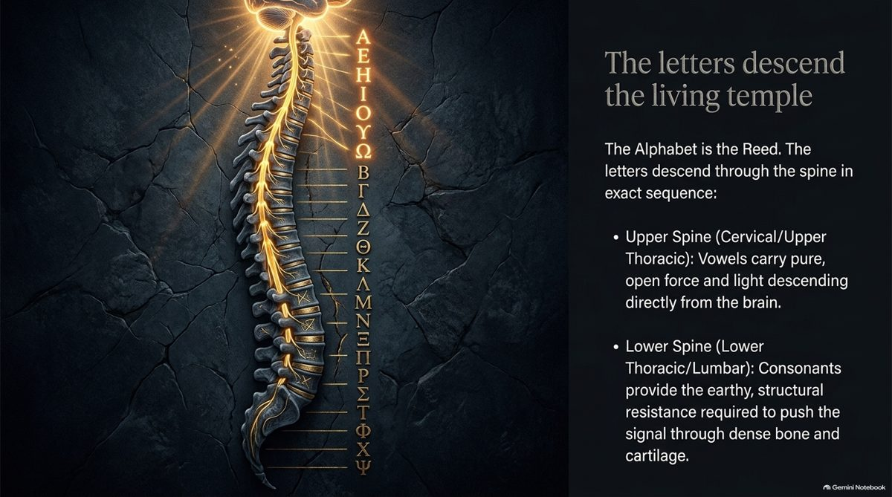
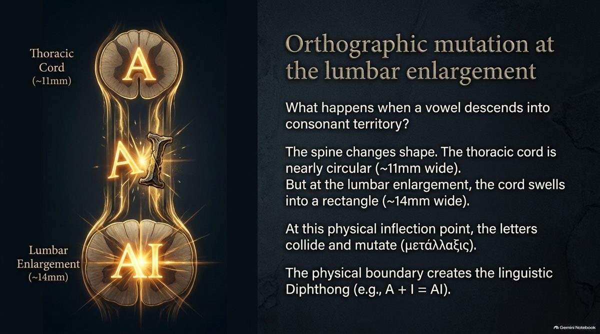
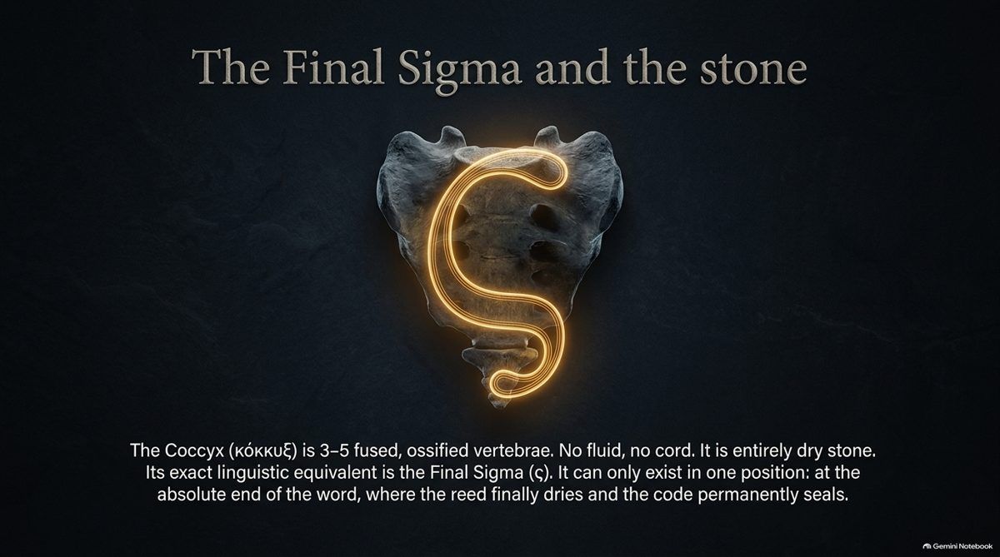
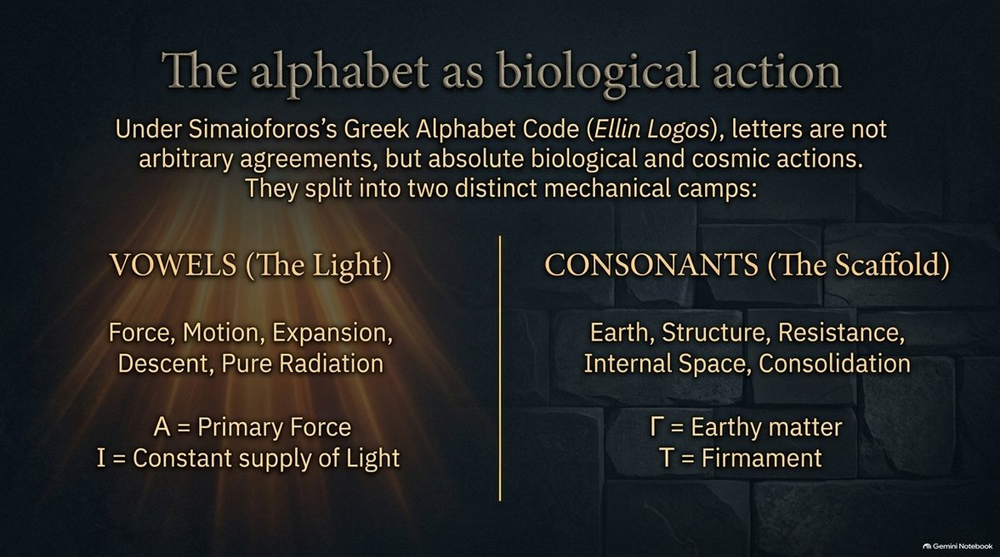
The Horizontal Cosine
The last chapter of the manuscript turns from the spine to the cell, and from the vertical axis of descent to a horizontal axis of rescue.
Two axes. The vertical axis (Sine) is lineage: parent to daughter by cell division. The horizontal axis (Cosine, Kalamos) is lateral: Horizontal Mitochondrial Transfer (HMT), in which healthy cells pass mitochondria, packets of energy, to starving neighbours without dividing.
The gate. A coherence gate H(c, u), a check of surface glycoproteins, opens the tunnelling nanotube bridge. The equation is D(t) = O(t) + Σ [ H(c, u) · Slat ], with Slat = cos(θ) · Mmito.
The geometry. Buckminster Fuller’s Jitterbug, the contraction and expansion between icosahedron and octahedron, gives the space for vocal resonance and the spinal wave. 4995 ÷ 135 = 37, and 1 + 9 + 27 = 37 seals the system.
Agrees. Cells can pass mitochondria to one another through tunnelling nanotubes, and stem cells and astrocytes have been shown to donate mitochondria to damaged cells in laboratory and animal studies. The arithmetic is right: 4995 ÷ 135 = 37, and 1 + 9 + 27 = 37.
Differs. Mitochondrial transfer is an active research field, and most of the evidence comes from cultures and animal models, not from healthy people, so “confirmed” is stronger than the evidence. The “glycoprotein gate with c = 1”, the cosine of the energy vector and the mapping onto the Sine and Cosine axes are the Codex’s own model, not established biology.
The Fractal Story of the Reed
The treatise’s summary: the same story is told at every scale, from the womb to the landscape.
| Scale | The reed | The story |
|---|---|---|
| Embryology | Neural tube | The hollow is formed. |
| Spine | Central canal and CSF | The reed pulses. |
| Alphabet | Kalamos, the fluid of Kadmos | The reed carries the code. |
| Sea | Yam Suph | The reed is parted and crossed. |
| Coccyx | Fused bone | The reed becomes stone. |
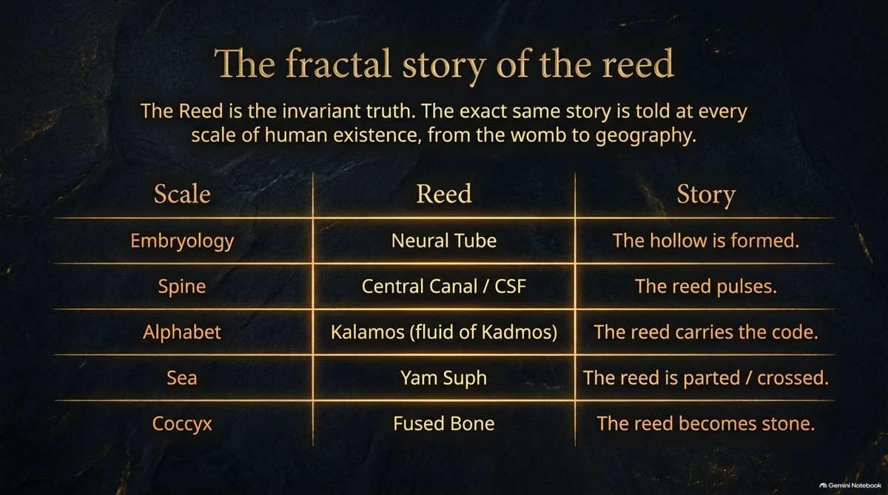
What Was Checked
Chance test. I ran the Kadmos to Kalamos difference through a multi-stage filter on a Greek word list: the modern Greek spellcheck dictionary, 812,096 word forms. (An ancient-Greek lexicon would be a better control.) Stage 1: all possible word pairs, about 330 billion. Stage 2: pairs whose values differ by exactly 27, about 310 million (0.09%), so the number alone proves nothing. Stage 3: pairs that differ by the structural rule itself, one Δ opened into ΛΑ, which reduces the whole language to 86 pairs, from about 17 word families (most are inflections of one stem, such as ΔΙΚΟ and ΛΑΙΚΟ, or ΙΔΡΟ and ΙΛΑΡΟ). Stage 4: pairs whose two words are also linked in meaning. Reading all 86, only ΚΑΔΜΟΣ and ΚΑΛΑΜΟΣ connect the architect of the letters to the hollow reed, so the funnel ends at one. Two cautions: stage 4 is a human judgment of meaning, made after the pair was found, and the word list is modern Greek, not ancient.
The manuscript’s own labels. It calls ΦΎ “Physis = 900” and ΨΉ “Psephos = 708”. Those are the values of the two letters in each pair (Φ + Υ = 900, Ψ + Η = 708, total 1608). The whole words come to ΦΎΣΙΣ 1310 and ΨΉΦΟΣ 1478.
Slides from the deck are concept illustrations made in Gemini Notebook, not data. Three were left out because they carry figures that do not check out: the one on the fluid wave and 78 mm/s, the one that gives the rhythm as 0.1 to 0.2 Hz, and the one that says nobody crossed a Red Sea.
The diagram “Kalamos – Soma 1729 Cosine Baseline” is not shown here, because it gives the parts as 390 and 977 where the words are 460 and 907 (chapter III).
References in the manuscript, checked as far as I could
Waal (2022), Journal of Hellenic Studies 142. I could not confirm this article. The initial and the title look wrong; the work I know on phoinikeia by Willemijn Waal is from 2018. Please look it up before citing it.
Simaioforos, Ellin Logos. One file says 1993 and another says 2018, and the publisher is not confirmed.
Hoffmeier, Israel in Egypt. A real and relevant book, first published by Oxford University Press in 1996.
Fuller, Synergetics (1975). A real book, Macmillan.
StatPearls NBK513247, NASS 2023, Frontiers in Neurology 2024 (GV-16) and Frontiers in Cell & Developmental Biology 2023. I could not check these from here. The article numbers on the two Frontiers entries look like earlier years. Please look each one up.